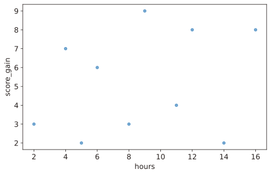
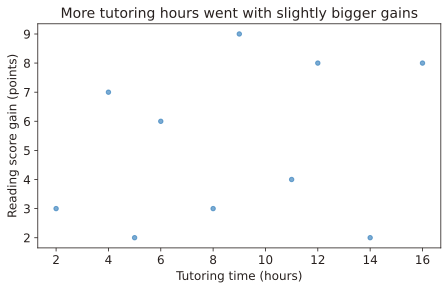
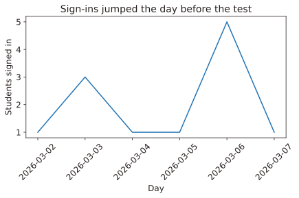

Skills you'll practice in this reading:
Stakeholder Communication — Writing up findings for a real audience who wasn't in the room for the analysis, with a clear structure and an actual supporting visual.
Already started this reading? If you saved a JSON file from a previous visit, upload it here to pick up right where you left off.
Your goal: tell a chart made for you apart from a chart made for someone else, pick a chart type on purpose, and chart a count over time. Every chart you share at work gets judged by a reader who never saw your notebook. You already know how to load a CSV and group rows with pandas.
Key terms for this reading
These are the words this reading uses. Flip a card to see what a word means. Each one comes up again below with an example.
1. Quick recall
Two pandas skills you already have come up in this reading.
Recall: a table has one row per student and a school column. What does df.groupby("school")["score_gain"].mean() give you?
Recall: what does df[["hours", "score_gain"]] give you?
2. Look first: a chart for you
The center keeps a small table of ten students. hours is how many hours of tutoring each student got. score_gain is how many points their reading score went up.
Before you look at a picture, check a number. Correlation is a number from -1 to 1 for how closely two number columns move together. Near 1 means one goes up when the other does, almost every time. Near 0 means a weak link. .corr() computes it for every pair of columns you give it.
New in this cell: import matplotlib.pyplot as plt loads the charting tool. .plot.scatter(x=..., y=...) draws one dot per row. alpha=0.6 makes dots a bit see-through. plt.show() draws the chart under the cell.
Predict: look at the CSV. Ivy got 14 hours and gained 2 points. What will .corr() show for hours and score_gain?
import pandas as pd
import matplotlib.pyplot as plt
students = pd.read_csv("students.csv")
print(students[["hours", "score_gain"]].corr())
students.plot.scatter(x="hours", y="score_gain", alpha=0.6)
plt.show()
hours score_gain hours 1.000000 0.258846 score_gain 0.258846 1.000000

That chart is an exploratory chart: a quick, rough chart you make for yourself to find a pattern. It has no title, and its labels are raw column names. That is fine. You can make as many as you need, and nobody else sees them. The pattern here is weak: 0.26.
You paste the rough chart into an AI chat. It replies: "There is a clear, strong relationship. More tutoring means much higher scores." What should you do?
3. Make it a chart for someone else
The grant committee is the stakeholder: the person a finding is for, who wasn't there while you explored. They need an explanatory chart: a polished chart, chosen on purpose, that tells them one clear finding. Every explanatory chart starts as a rough one. Three changes turn it into a chart someone else can read:
- A title that states the finding, in under 10 words.
- Axis labels in plain words, with units.
- Nothing extra that doesn't help the finding.
Which title fits this chart for the committee?
New in this cell: plt.title("...") puts a title over the chart. plt.ylabel("...") labels the y-axis, the one up the side. The x-axis, across the bottom, has its own function with a matching name.
Fill in the blank in cell [2] so the x-axis gets a label with units.
students.plot.scatter(x="hours", y="score_gain", alpha=0.6)
plt.title("More tutoring hours went with slightly bigger gains")
plt.____("Tutoring time (hours)")
plt.ylabel("Reading score gain (points)")
plt.show()

- Look at the line after
plt.title. It should label the x-axis, the one across the bottom. - Type the name of that
pltfunction. Type only the name: noplt., no parentheses. - Press Check. When it's right, the Run button shows the finished chart.
Why: a reader can't tell what "16" means unless the axis says hours.
4. Count sign-ins per day
The committee also asks how busy the center gets. Each row of sessions.csv is one student signing in. The center is open Monday to Saturday, and a reading test was on Saturday, March 7.
sessions = pd.read_csv("sessions.csv")
sessions.dtypes
sign_in str student str dtype: object
pandas reads sign_in as text (str). Text can't tell you which day a time falls on.
New in this cell: pd.to_datetime(...) turns text like "2026-03-02 15:30" into real dates and times. Saving it back with sessions["sign_in"] = ... replaces the text column.
Predict: what dtype will sign_in show after cell [4]?
sessions["sign_in"] = pd.to_datetime(sessions["sign_in"]) sessions.dtypes
sign_in datetime64[us] student str dtype: object
sign_in is now a datetime column: a type that stores real dates and times, so you can pull out the day, month, or weekday.
New in this cell: .dt.date keeps just the calendar day of each time. Grouping by that, then .size(), counts the rows on each day. .nlargest(2) shows the two biggest counts with their days.
daily = sessions.groupby(sessions["sign_in"].dt.date).size() print(len(daily), "days") daily.nlargest(2)
6 days sign_in 2026-03-06 5 2026-03-03 3 dtype: int64
A Series's .plot() draws a line by default. rot=45 tilts the dates so they don't overlap.
Predict: why is a line a good fit for daily?
daily.plot(rot=45)
plt.title("Sign-ins jumped the day before the test")
plt.xlabel("Day")
plt.ylabel("Students signed in")
plt.show()

One week can show a spike. It can't show a long-term trend. For that, you'd need months of sign-ins.
5. Check your understanding
Pick a chart type by first asking: what are you actually comparing?
- One variable's shape? Use a histogram or boxplot.
- A trend over time? Use a line graph.
- Two number columns against each other? Use a scatterplot.
- One number across groups? Use a bar chart, or a boxplot if the spread inside each group matters.
Match each question from the director to the chart type that answers it. Then press the self-check button.
Histogram or boxplot
Line graph
Scatterplot
Bar chart
6. Wrap-up
- An exploratory chart is for you: fast and rough. An explanatory chart is for a stakeholder: one finding, a finding title, and labels with units.
- Check a number like
.corr()before you trust a picture, or an AI's words about it. - To chart a count over time:
pd.to_datetime, group by.dt.date,.size(), then.plot()for a line.
New situation: the director wants one more chart for the committee: the average score gain for 6th, 7th, and 8th graders. What do you make?
In interviews, "Walk me through a chart you made" is common. A strong answer names what you saw, the number behind it, what it means, and one caveat.
Next, the same chart types get checked for honesty: where an axis starts, and what a chart leaves out.
7. Reflection
- Finish the sentence "Before I share a chart, I will…". Name at least two changes you'd make to a rough chart.
- Add one sentence on who would read it.
Why: naming the reader first decides the title, the labels, and the chart type.
Stuck?
Go further (optional): exploratory vs. explanatory
This video is optional and is not counted in the time estimate. As you watch, notice when the speaker says a chart is for finding something and when it is for telling someone.
Watch on YouTubeAdditional resources
Not counted in the time estimate above.
- pandas docs: Chart visualization: every
.plotchart type, with pictures. - pandas docs: to_datetime: how text becomes real dates.
- Data to Viz: a chart picker that starts from what your data looks like.
Your score & keep a copy of your work
Keep it in your own GitHub repo (optional, for your streak/portfolio): the Download JSON button above saves the file into your computer's Downloads folder. Here's how to move it into a repo of your own.
Step 1: Make a repo on your GitHub account (one time only — collapse this afterward)
- On GitHub, click the + in the top-right corner, then New repository.
- Give it a name (something like
data-analytics-readings) and click Create repository. - On the new repo's page, click the green Code button and copy the HTTPS URL.
- In your terminal, clone it to your computer, pasting in the URL you just copied:
git clone https://github.com/YOUR-USERNAME/YOUR-REPO.git
You only do this once. For every reading after this one, start at Step 2.
Step 2: Save this reading's file into that repo (do this for every reading):
- Move into your repo folder:
cd YOUR-REPO
- Move the file you just downloaded out of
Downloadsand into that folder:mv ~/Downloads/whos-this-chart-for-reading.json .
- Save it to git and push it up to GitHub:
git add whos-this-chart-for-reading.json git commit -m "Complete who's this chart for reading" git push
Submit for credit: this opens a pre-filled GitHub Issue in your own private submission repo. Only you and your instructor can ever see it. You get 4 submission attempts per reading; your best score counts.
First time submitting? Set up your private submission repo (one-time)
- Go to the DA-Reading_Submissions template and click "Use this template" to create your own copy.
- On the create page, set the visibility to Private. It defaults to Public, so you have to change it yourself.
- In your new repo: open Settings, then Collaborators, then Add people, and add your instructor's GitHub username so they can see your scores. Your instructor will share their username with you.
- Copy your repo's name exactly as it appears in GitHub's URL, including any hyphens, underscores, and capitalization. Paste it into the "Your submissions repo name" box below, along with your GitHub username, then click Submit for credit.
Clicking "Submit for credit" opens a new tab with your answers pre-filled into a GitHub Issue. You still need to click "Submit new issue" on that page yourself to actually finish submitting.
Getting a "404" page instead? Two usual causes: the repo name you typed doesn't exactly match the real one (check for a stray hyphen or different capitalization), or you're not signed in to GitHub as the account that owns the repo — a private repo looks like a 404 to anyone who isn't signed in to it.